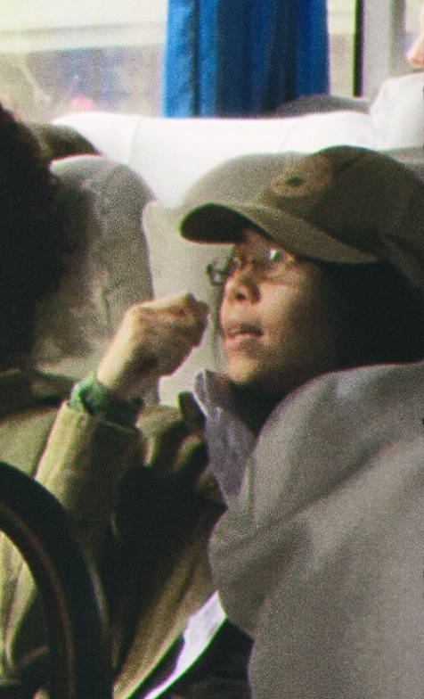
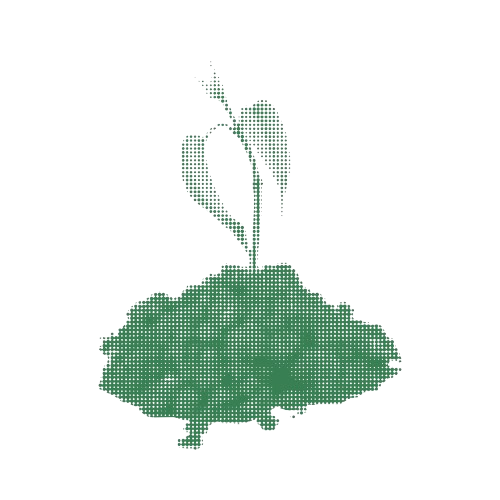
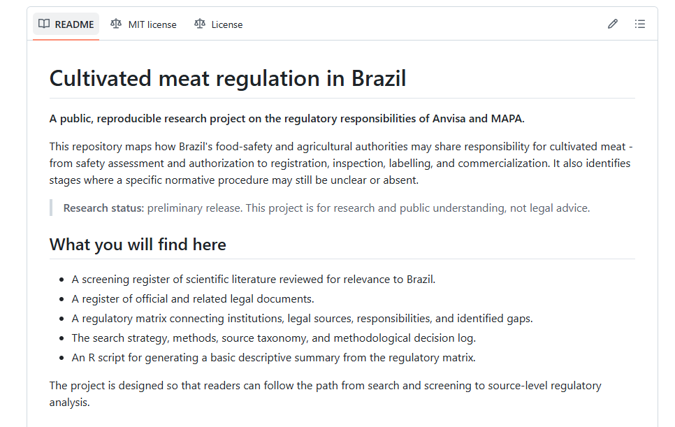

Expanding undergraduate research access
Making independent research, collaborative project-building, and international opportunities more visible to students in Brazil and across the Global South.
Biology student interdisciplinary maker-researcher
First-year Biology undergraduate at UFSC, junior researcher, data analysis intern, and member of the AltProtein Project. This is a growing archive of research and visual experiments.
Explore the work
Florianópolis, BRCurrently exploring
That's right, this one!
01 / About
The obligatory credentials section.
I’m Vitória Teresa (either name is fine), born and raised on the cold mountains of southern Brazil. I'm currently pursing a BSc in Biological Sciences at the Federal University of Santa Catarina (UFSC), focusing on public health, biosecurity, global risk analysis and data sciences. A member of the AltProtein Project UFSC (affiliated with The Good Food Institute), student representative on the Biological Sciences Course Board, a data analysis intern, and a junior researcher investigating Brazil’s cultivated-meat regulatory scene.
What I care about
Ideas and pathways I want to make more visible.

Making independent research, collaborative project-building, and international opportunities more visible to students in Brazil and across the Global South.
Recognizing and contributing (in the ways that I can) to the scientific, philosophical, and historical corpus of my land.
Using cause prioritization and long-term thinking to guide decisions.
i.e. AI should be used as if it was a junior researcher you’re mentoring – not YOUR mentor!
Academic education
Degrees, institutions, and formal academic training.
Federal University of Santa Catarina (UFSC)
Complementary learning
Courses, workshops, certificates, and independent study.
Lens Academy · 25 hours · Online + synchronous
Care About Climate · 40 hours · Online + synchronous/asynchronous
Universidade de São Paulo (USP), Brasil · 20 hours · Online + synchronous
Work experience
Research roles, internships, and professional experience.
Analysis, research support, and building useful ways to communicate data inside Brazilian-European startup Descarbonize.
Investigating Brazil’s cultivated-meat regulatory scene through research on how responsibilities are distributed between Anvisa and MAPA for safety assessment, authorization, registration, inspection, labeling and commercialization of cultivated meat in the country, and to map the remaining regulatory gaps.
Environmental Education Intern at SATC School. Participated in the "Palmito Juçara" conservation program, and coordinated educational activities with diverse audiences.
Volunteering and collaborative work
Student representation, volunteer research, and collaborative initiatives.
Volunteer research and outreach connected to GFI Brasil.
Representing students in course-level academic and collaborative discussions.
Languages
Working languages and current learning.
02 / Research
Current research
Work in progress, open questions, and ongoing investigations.
Ongoing · 2026
Investigating how responsibilities are distributed between Anvisa and MAPA for safety assessment, authorization, registration, inspection, labeling and commercialization of cultivated meat in Brazil, and to map the remaining regulatory gaps.
Get in touch about this work ↗Publications and presentations
Articles, abstracts, talks, posters, and other public outputs.
In construction. Come back later!
Upcoming publications and presentations
Outputs currently being prepared for future talks, posters, and public release.
Upcoming publications and presentations will be added here.
03 / Technical projects

Data analysis · 2026
A project aimed at mapping, organizing, and visualizing the geographic distribution of Brazilian startups operating in the plant-based food, fermentation, and cultivated meat sectors. The initiative employs Python, along with geoprocessing and visualization tools. Still growing!

Data repository · 2026
Open repository containing reproducible materials for the systematic mapping of scientific literature and official documents regarding the regulation of cultivated meat in Brazil. Includes: screening records, R analysis, and PRISMA methodology documentation.
Web · ongoing
In construction. Come back later!
04 / Talks & writings
Talks · in construction
Presentations, posters, and public-facing explanations of research will be collected here.
Get in touch ↗Writings · in construction
Writing on public health, biosecurity, technology, AI, and the questions connecting them.
Get in touch ↗Archive · soon
This gallery will grow with new talks, essays, posters, and working notes.
05 / Contact
Have a project, a paper, or a curious thread to share?
vv.ss.teresa@gmail.com ↗Find me elsewhere